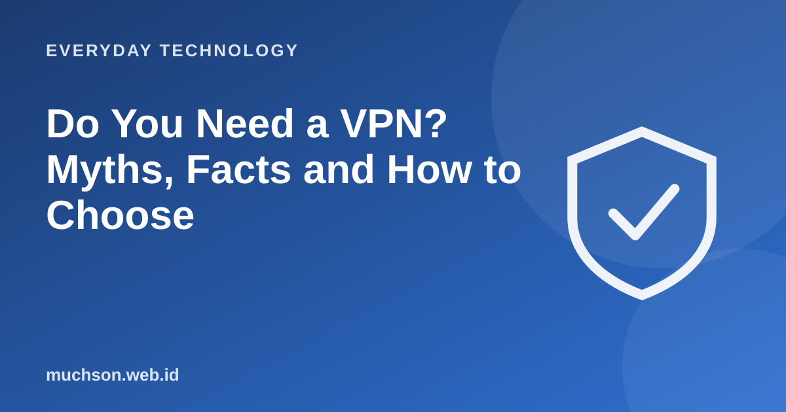

Home › Articles › Everyday Technology
Everyday TechnologyDo You Need a VPN? Myths, Facts and How to Choose
VPN ads promise total anonymity and protection from hackers. In reality a VPN is useful for certain things and does not answer many others. Understanding its limits helps you decide whether you need one.

What does a VPN do?
Text description of the diagram
- Your device: encrypts the traffic
- The VPN tunnel: passes through the local network
- The VPN server: becomes your "face" on the internet
- The destination site: sees the VPN server's address
Myths and facts
When a VPN is really useful
- Using untrusted public Wi-Fi and wanting extra protection.
- Accessing the office network securely from afar (a company VPN).
- Hiding activity from a local internet provider or network operator.
- Accessing services in line with their terms and the law in your region.
About trust
A VPN moves trust from your internet provider to the VPN provider. You must trust that VPN provider. Choose carefully and avoid unclear free services.
FAQ
Is a VPN legal?
In many places yes, but using one for illegal activity is still against the law. Check the rules in your region.
What is the difference between a VPN and incognito mode?
Incognito mode only avoids saving history on your device. A VPN encrypts the traffic and changes the IP address that is seen.
Does a VPN guarantee safety on public Wi-Fi?
It helps, but it is not a guarantee. Still avoid entering very sensitive data and watch for signs of phishing.